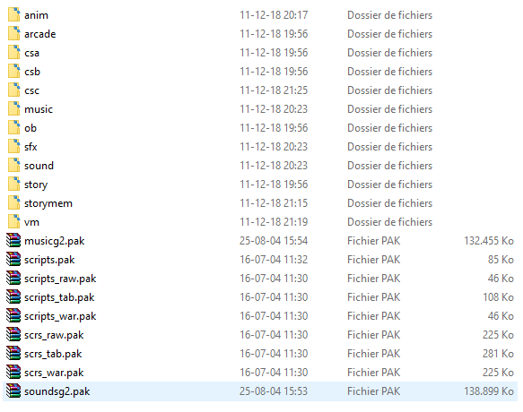
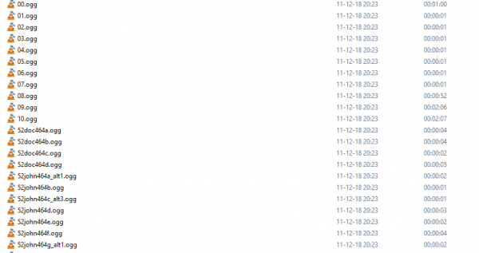
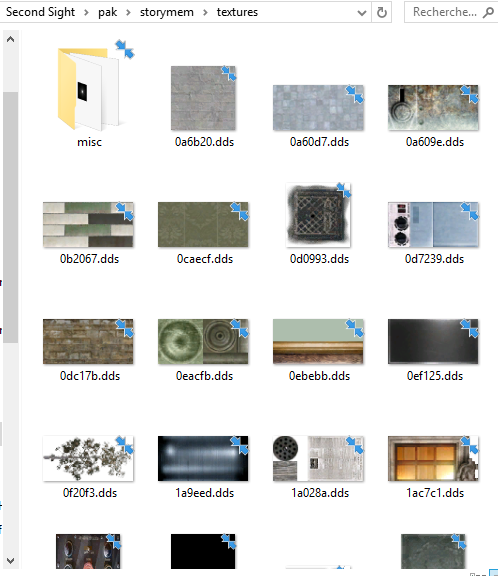

![[ANA JDG] Asterix and the Great Rescue - Megadrive](vi/6oUXi0ckLmA/default.jpg)
![[ Présentation pour la chaîne Grenier des Joueurs ] JDG Prod](art/SHAR.6419.583.2.jpg)


CONTEXTE DE SORTIE
Second Sight est un jeu-vidéo sortit en 2004 sur tout les supports de l'époque excepté la Dreamcast parce qu'elle était déjà morte!
L'éditeur CodeMaster (Entreprise britannique ayant fait ses débuts dans le monde du jeu-vidéo avant même que la NES existe) aura décidé de partir dans un jeu linéaire mais avec un gameplay assez permissif et une histoire justifiant l'avancé des facultés de notre personnage et de sa quête!
Le jeu se présente comme une version améliorée des mécaniques de GoldenEye007 (Normal, les développeurs, "Free Radical Design",ont parmi eux des anciens membres de la société Rare qui ont travaillé sur ce jeu) et se permet aussi de mettre en avant des mécaniques de gameplay beaucoup plus poussé au niveau de la physique et ses interactions!
GAMEPLAY
Le joueur commencera le jeu avec 4 mécaniques de gameplay:
-Télékinésie: Permet de faire léviter les objets et de les faire bouger où bon nous semble,
-Se battre: La fameuse touche "F" qu'on emploi qu'en cas de combat rapproché ou pour assommer un personnage,
-La guérison: Parce que le jeu n'utilisera les sprays de soin que dans 2 niveaux sur les 17,
-La discrétion: On peut s'accroupir, on peut se faufiler dans le dos de nos ennemis et on peut étrangler ces derniers!
Si le jeu est court (17 niveaux, je rappelle), les différentes cartes permettent quand même un maximum de truc à faire sans que le jeu nous punisse comme pas possible pour avoir osé ne pas aller dans son sens!
Le truc est simple,si vous jouez comme un connard en voulant faire le maximum de victime, le jeu va vous offrir UNE ARMÉE ENTIÈRE D'ENNEMI AVEC DES ARMES DE PLUS EN PLUS PUISSANTE AU FUR ET À MESURE DES MORTS QUE VOUS AVEZ COMMIS!
Prenons le niveau 3 qui se nomme "Expérimentation", c'est le premier niveau où vous allez pouvoir déclencher l'alarme et affronter un maximum d'ennemi alors que les seules nouvelles mécanique de gameplay que vous avez en plus sont l'impulsion PSY (Vous tuez en un coup un ennemi) et l'utilisation des armes à feu!
Ce niveau peut se terminer de plusieurs manières (2 chemins possibles, ne vous emballez pas non plus) mais vous pouvez y passer des heures de fun avec l'intelligence artificielle qui se bonifie à vu d'½il!
Au début, les ennemis auront peur de vous quand vous utilisez impulsion PSY et Télékinésie devant eux MAIS au bout d'une vingtaine de mort, ils en ont plus rien à foutre et ils vous le disent par voie buccale et létale si vous voyez ce que je veux dire (bla bla et pan pan)!
Sinon, un autre exemple de bonification de l'intelligence des ennemis, ils savent que ça sert à rien de tirer plus de 30 secondes sur un obstacle qui vous protège et ils le contourne en continuant de tirer...ce qui fait qu'ils peuvent être bien plus malin que vous ET C'EST TRÈS STRESSANT D'AVOIR UN ENNEMI QUI SE CREUSE PLUS LES MÉNINGES QUE VOUS!
Si au début du jeu, vous vous amusez avec la télékinésie pour détourner l'attention d'un garde pour le tuer discrètement, ils savent vite que c'est vous et commencent à vous chercher dès les 3 secondes de réflexions faîtes
(en gros, ils s'éloignent de vos conneries ce qu'ils les rapprochent de votre position en mode "toujours aux aguets")!
Bon... parlons des armes, la partie la plus nulle du jeu:
Les armes ne se différencient pas par leurs portées, vous pouvez faire un headshot à un sniper avec un NSE ou un pistolet tranquillisant donc vous pouvez faire tout le jeu avec cette dernière arme si il n'y avait pas un rapport d'efficacité!
L'arme la plus bruyante mais celle qui a une bonne cadence de tir est le fusil d'assaut, elle est souvent planquée dans les niveaux où on a une embuscade!
L'arme ayant aussi une bonne cadence de tir est le PM, elle se trouve dans tout les niveaux à partir du troisième! Vous en aurez notamment besoin aux 4 derniers niveaux du jeu car certains ennemis auront des boucliers psychiques qui ne se détruisent qu'après une dizaine de balle... ou un coup d'impulsion psychique!
L'arme la plus puissante des moins lente est le Fusil Cal.12 NSE
(trouvable en Easter Egg pour la première fois dans le niveau 6 nommé "Démence" après un petit scan des toits à la télékinésie pendant la partie où on est à l'extérieur,sur le mirador, qui nous permet de trouver une clé qui ouvre la cabine au fond à gauche!)
qui prend un temps dingue à recharger après ses 8 balles mais qui one-shot les ennemis comme si on leurs faisait des headshots! Elle est un peu doublon avec le pouvoir "impulsion psychique" mais on va dire que c'est pour économiser la jauge d'énergie psychique...tient, je n'en ai pas encore parler!
Il y a 2 jauges dans le jeu: La santé et l'énergie!
Vous récupérez de la santé grâce au pouvoir de guérison (sans blague),
Vous récupérez de l'énergie en ne l'utilisant pas pendant un moment (15 secondes pour que la jauge à 0 reviennent à 100%), si elle atteint 0, l'interface du jeu se trouble d'un coup comme un vieux effet de Sony Vegas Pro et on a un bruit parasite qui s'affiche qui va vous gêner pendant 5 secondes le temps qu'il s'estompe!
En tout, le jeu vous offrira dans le gameplay 4 pouvoirs qui seront améliorés jusqu'au niveau 8 "Exploration":
-Télékinésie (au début, on peut soulever QUE LES OBJETS et au niveau 6,démence, il pourra soulever des gens),
-Guérison (Ne va pas s'amélioré pendant tout le jeu ,il sert juste à se guérir!),
-Impulsion PSY (Au début, on peut lancer une impulsion devant soi et one-shot un ennemi et au niveau 4,fuite,on peut faire tomber tout les ennemis autour de nous sans les tuer pour autant SAUF S'ILS SONT DANS UNE POSITION OÙ ILS NE PEUVENT PAS REMETTRE LEURS BRAS LE LONG DU CORPS...dans ce cas, ils sont décédés!)
-Ensorcellement (Permet d'être invisible et, quand le scénario le permet, de rassurer les gens),
-Projection (Au début, c'est juste une projection de soi qui peut traverser les lasers de sécurités et ce pouvoir sera amélioré au niveau "infiltration" pour posséder les gens CE QUI SERA LE POUVOIR LE PLUS CRACKÉ CAR VOUS POURREZ SE FAIRE ENTRE-TUER VOS ENNEMIS)!
Bon...je pense qu'il est temps de vous expliqué comment le jeu se passe:
Vous avez 17 niveaux qui font un crescendo en terme de taille de carte du premier au dixième niveau avant de faire un decrescendo afin de créer des niveaux "couloirs" qui permettent de mettre plus en avant le scénario et la difficulté!
En effet, le jeu gagne en difficulté quand l'espace de jeu ne permet pas de fuite ou de protection par un obstacle comme un mur ou un rocher (Comme tout les FPS en général)! Second Sight ne brillant pas pour sa partie "gun fight" mais plutôt sa partie "puzzle", il faudra refaire plusieurs fois un niveau pour comprendre les différents moyens d'arriver à nos fins!
Le jeu n'a pas une durée de vie énorme si on joue à celui-ci juste pour le scénario mais si on s'attarde sur les dialogues des PNJs,
les deux mini-jeux (Astéroïds,ou impact Earth dans le jeux, et X-Space ´92 qui est un shoot'em'up),
les différents moyens pour finir un niveau,
les moments où on se rend compte que les développeurs ont vraiment penser à tout pour qu'on ne soit pas bloqué mais aussi pour pas que le scénario perd en cohérence,
Les fonctionnalités de la touche "Tab" (Les renseignements sur les armes,les personnages, les pouvoirs psychiques, les niveaux, les mini-jeux et autres),
Le niveau caché "Challenge Extra de Starke",
...
On se rend vite compte que le jeu mérite qu'on s'y attarde bien plus que deux heures!
Je l'ai terminé 8 fois en 10 ans (parce que je l'ai depuis mes 12 ans) et je peux vous dire que plus j'y joue, plus je m'amuse à trouver les différents moyens de me débarrasser des ennemis de la manière la plus créative possible (à base de télékinésie et de possession)!
SPOIL DU SCÉNARIO
Bon... spoilons le scénario!
Vous êtes John Vattic, vous avez des pouvoirs psychiques qui vous ont été révélés par des gosses qui ont aussi des pouvoirs psychiques sauf que vous êtes encore plus puissant qu'eux puisque vous êtes un adulte et aussi médecin!
Vous avez été recruter par l'armée américaine pour participer à la mission de l'équipe WinterIce grâce à Jayne Wilde qui est aussi une personne doté de pouvoir psychique mais qui ne sait pas se battre avec...juste faire de la télépathie et voir l'avenir proche !
La mission de l'équipe WinterIce est d'allé en Sibérie pour trouver le professeur russe Grienko qui travaille sur une mystérieuse arme qui se révélera être la création de soldat ayant des pouvoirs psychiques...sauf que pour les faire, il faut soumettre les fameux petits enfants à des tests qui en font des catastrophes de Tchernobyl tellement ils deviennent difformes! Heureusement, ceux qui vous viennent en aide ont encore une intégrité physique et psychique!
En Russie, vous vous faîtes attaquer par des Russes qui ont de l'équipement Américain...en faîtes, c'est parce que le directeur Hanson, un putain de mec d'extrême droite qui veut conquérir le monde (bref, c'est un américain), fait tout ce qui est en son pouvoir pour que les recherches de Grienko arrivent à terme pour les récupérer et créer son armé de super-soldat!
Le jeu vous montre qu'il a réussi mais grâce au pouvoir ultime de John Vattic qui est la faculté de voir l'avenir (il voit ce qu'il risque de se passé 6 mois plus tard), il changera le futur en tuant Hanson et en libérant les enfants!
La morale de l'histoire: La guerre c'est mal et les cons sont au pouvoir...AH, j'ai oublié de préciser que ce jeu se passe en pleine guerre froide!
Le jeu alterna la vision futuriste (on commencera d'ailleurs dans le futur) avec le présent (qui est aussi le passé...aïe ma tête) où les plus gros événements et phases du jeu en équipe se feront (vu que vous êtes avec l'équipe WinterIce)!
Le scénario est suffisamment floue au début pour nous faire croire que nous sommes un malade dans un hôpital à qui ont a donné des médicaments qui lui donne ses pouvoirs psychiques mais une fois commencé le niveau "Fuite", s'y on s'attarde sur le déroulement de l'histoire, on apprend qu'on change le futur (Jayne n'est pas morte) et c'est depuis donc ce cinquième niveau que le jeu va alterner les phases "Six mois plus tôt" et les phases futuristes afin de faire revivre d'abord Jayne qui va nous permettre de nous remémorer Starke (que le chef de l'équipe WinterIce) et, ainsi,chacun nous donnera suffisamment d'information (Starke nous donnera carrément une pile de papier consultable sur la touche TAB) pour comprendre le projet d'Hanson et de Grienko!
AU DELÀ DU JEU
Je vais continuer cet avis-critique en donnant des informations qu'on ne trouve pas dans le jeu sans les développeurs par voie journalistique et provenant de Wikipédia!
C'est partit pour la samba des liens:
http://www.gameblog.fr/blogs/cutscene/p_107934_quand-un-jeu-ferait-un-meilleur-film-le-cas-second-sight
Dans cet article de blog de Gameblog ( hi hi hi ), on apprend plusieurs choses intéressantes:
-La capacité de remonter dans le temps aurait dû être intégrer directement au gameplay et non être utilisé comme mécanique du scénario seulement,
-Le journaliste trouve que la gestion du TPS (Third Person Shooter, jeu de tir à la troisième personne) n'a pas bien été appréhender. La caméra est lente car ne permet que de visé une étendue de 180° (soit,l'équivalent d'une vue subjective...comme dans GoldenEye007) et la visée est nulle de par son manque de feeling (j'admet qu'il n'y a pas de notion de recule pour les armes puissantes et que la notion de portée est inexistante).
-Le journaliste trouve que les phases de gunfight et de discrétion font partit de 75% du gameplay général! (Je suis pas vraiment d'accord car le gunfight peut TOUJOURS être évité sauf pour les niveaux sans pouvoirs...et il n'y en a que 4 sur les 17 niveaux du jeu!)
-Le journaliste compare l'ambiance du jeu à la licence Metal Gear Solid (Merci mec, tu sais faire plaisir).Il en retient le traitement de l'humour (les doublages façons nanars) et la musique !
Je tiens à copier-coller son résumé de l'histoire car je le trouve complet et...quoi? Ah, vous estimez que c'est du vol...bon bah,alors je tiens à dire que son résumé de l'histoire dans sa partie "Spoil" est très bien écrite et encore plus complète que la mienne!
Bon, changeons de source et consacrons-nous maintenant au Wikipédia des développeurs:
https://fr.wikipedia.org/wiki/Crytek_UK
Contrairement à ce que vous allez me reprocher en voyant le lien, NON JE NE ME SUIS PAS TROMPER DE PAGE WIKIPÉDIA! "Free Radical Design" s'est renommé "Crytek UK" en 2009 à cause de redressement judiciaire! Étant à l'origine de la série TimeSplitters
(qui est une série de jeu comme Second Sight mais sans les pouvoirs psychique et avec une ressemblance plus proche de GoldenEye007 en terme de visée car le jeu peut être un FPS)
Free Radical Design se fera racheter par le groupe allemand Crytek qui sont les développeurs des licences Far Cry et Crysis...décidément, le monde est petit!
Nous avons donc des gens qui ont bossé sur GoldenEye007 qui ont travaillés sur Second Sight et qui ont travaillé pour le moteur de Far Cry et Crysis...LE MONDE EST PETIT JE VOUS DIT!
Mais le 30 Juillet 2014, Free Radical Design (sous le nom de Crytek UK) est vendu à Deep Silver pour devenir le studio "Dambuster Studios". (Bon sang, il en auront fait du chemin ces développeurs)!

Les studios Dambuster font actuellement le jeu "Homefront: The Revolution"...c'est tout ce qu'on a sur les développeurs de Second Sight aujourd'hui,14 ans après la sortie du jeu!
Voici des images de ce fameux "Homefront: The Revolution" !
Pour revenir sur la page Wikipédia de Crytek UK: https://fr.wikipedia.org/wiki/Crytek_UK
on apprend que la licence Second Sight a été rachetée par THQ Nordic le 15 Août 2018!
THQ Nordic est une société autrichienne d'édition de jeux-vidéos qui ne font que distribué les jeux en Autriche comme Halo Wars 2 ou des jeux que je ne connais pas excepté The Guild 3, ...
J'ai le seum, la licence Second Sight appartient à donc à un éditeur que je connais juste de part un jeu appartenant à une série que je ne connais que par le let's play narratif du Joueur du Grenier... c'est d'une tristesse pour moi car ça veut dire qu'un remasterHD du jeu ne serait pas possible (car il n'y a pas de développeurs ), ni une suite,ni un portage sur Nintendo Switch,PS4pro et XboxOneX!
...Bah, le jeu n'a, de toute façons, pas besoin de suite puisqu'il n'a pas de trou dans son scénario et de toute façons, il a fait un petit flop d'après le journaliste donc il vaut mieux me contenter de Second Sight comme il est que devoir chercher à avoir une suite!
INFORMATIONS DU README.TXT
--------------------------------------------
Fichier ReadMe de "Second Sight" - 01/11/04
--------------------------------------------
I. Introduction
II. Installation
III. Protection contre la copie StarForce
IV. Lancer le jeu
V. Commandes
VI. Mémoire et performances
VII. Cartes son et cartes graphiques
VIII. Problèmes connus
IX. Sites web Second Sight
X. Contactez-nous
--------------------------------------------
I. Introduction :
--------------------------------------------
Merci d'avoir acheté Second Sight. Ce fichier contient des informations
techniques détaillées. Lisez-le attentivement.
-----------------------
Configuration minimum :
-----------------------
- Windows XP/2000
- DirectX 9.0c
- Processeur Pentium III ou Athlon cadencé à 1 GHz
- 256 Mo de RAM
- Carte graphique prise en charge
- Carte son compatible DirectX 9
- Lecteur de CD-ROM 8x
- 1 Go d'espace disque disponible
---------------------------
Configuration recommandée :
---------------------------
- Windows XP/2000
- DirectX 9.0c
- Pentium 4 cadencé à 2 GHz ou AthlonXP 2000+
- 512 Mo de RAM
- Carte graphique : GeForce FX 5xxx ou Radeon 9xxx
- Carte son compatible DirectX 9
- Lecteur de CD-ROM 32x
- 1 Go d'espace disque disponible
-----------------------------------
Cartes graphiques prises en charge :
-----------------------------------
- ATi Radeon 8500, 9000, 9100, 9200, 9500, 9600, 9700, 9800, X600, X800
- nVidia GeForce 3 Ti200/Ti500, GeForce4 MX420/MX440, Ti4200/Ti4600,
GeForce FX5200/FX5600/FX5700/FX5800/FX5900/FX5950
GeForce 6800GT.
Non compatible avec les cartes sonores/graphiques intégrées (ordinateurs portables inclus)
--------------------------------------------
II. Installation
--------------------------------------------
Insérez le disque de Second Sight. Si la notification d'insertion automatique est activée,
l'installation commencera automatiquement. Dans le cas contraire, ou si le programme
d'installation ne se lance pas, déroulez le menu Démarrer, choisissez Exécuter et
tapez 'D:\disc1\setup', où 'D' désigne la lettre correspondant à votre lecteur CD/DVD.
Le système vous demandera de choisir la langue d'installation. Sélectionnez-la dans la liste.
Pour continuer l'installation, suivez les indications à l'écran.
--------------------------------------------
III. Protection contre la copie StarForce
--------------------------------------------
Second Sight utilise le système de protection contre la copie StarForce. Lors du
premier lancement du jeu, vous devrez redémarrer votre ordinateur pour finaliser
l'installation des pilotes StarForce.
Les pilotes StarForce ne sont pas désinstallés en même temps que Second Sight, ce
qui peut causer des problèmes. L'utilitaire permettant de désinstaller ces pilotes se
trouve sur le CD de Second Sight, dans le répertoire 'Utils'.
Pour désinstaller ces pilotes :
Allez dans Démarrer -> Exécuter et tapez 'D:\utils\sfclean.exe', où 'D' désigne la lettre
correspondant à votre lecteur CD/DVD.
Cependant, si vous avez désinstallé ces pilotes et que vous lancez Second Sight à nouveau,
ou tout autre jeu protégé, les pilotes seront réinstallés. Pour plus d'informations sur la
protection contre la copie StarForce, consultez le site web
StarForce Technologies International (http://www.star-force.com)
--------------------------------------------
IV. Lancer le jeu
--------------------------------------------
Une fois le jeu Second Sight installé, un raccourci apparaît sur votre bureau.
Double-cliquez pour lancer le jeu.
Vous pouvez également procéder de la façon suivante :
Menu Démarrer -> Programmes -> Codemasters -> Second Sight -> Second Sight.
--------------------------------------------
V. Commandes
--------------------------------------------
Les commandes clavier par défaut sont les suivantes :
DÉPLACEMENTS :
--------------
AVANCER Z FLÈCHE HAUT
RECULER S FLÈCHE BAS
PAS À GAUCHE Q FLÈCHE GAUCHE
PAS À DROITE D FLÈCHE DROITE
ARMES :
-------
PSI PRÉCÉDENT N
PSI SUIVANT , MOLETTE SOURIS VERS LE BAS
ARME SUIVANTE G MOLETTE SOURIS VERS LE HAUT
ARME PRÉCÉDENTE B
VISER/LEVER BRAS BOUTON DROIT SOURIS
TIRER BOUTON GAUCHE SOURIS
LANCE-FLÉCHETTES 1
PISTOLETS 2
MITRAILLEUSE 3
FUSIL À POMPE 4
FUSIL DE SNIPER 5
AUTRES :
--------
S'ACCROUPIR/CESSER PROJECTION C
CORPS À CORPS F
CHANGEMENT CAMÉRA MAJ GAUCHE
ACTION ESPACE
VUE 1ÈRE/3E PERSONNE CTRL GAUCHE
CHANGEMENT RAPIDE A BOUTON MILIEU SOURIS
COLLÉ AU MUR/ARRÊTER E
--------------------------------------------
VI. Mémoire et performances
--------------------------------------------
Second Sight requiert au moins 256 Mo de RAM et un processeur 1 GHz.
Les performances du jeu seront meilleures si vous disposez de plus de RAM, d'un processeur
plus rapide et d'une carte graphique plus performante. Quelle que soit la configuration de
votre ordinateur, vous pouvez optimiser la mémoire disponible et améliorer les performances
du jeu en procédant ainsi :
• Fermez tous les programmes qui ne sont pas nécessaires au fonctionnement de Windows,
comme les programmes de chat ou les anti-virus.
• Défragmentez votre disque dur régulièrement.
• Augmentez la quantité d'espace disque disponible.
--------------------------------------------
VII. Cartes son et cartes graphiques
--------------------------------------------
CARTES GRAPHIQUES
Second Sight requiert une carte graphique disposant d'une accélération matérielle 3D
et d'au moins 64 Mo de RAM. Les pilotes de votre carte graphique doivent prendre en charge
DirectX 9 ou une version plus récente. Si vous rencontrez des problèmes en jouant,
assurez-vous que les pilotes de votre carte graphique sont à jour avant de contacter
le support technique.
CARTES SON
Si vous rencontrez des problèmes sonores (bruits parasites, par exemple),
il sera peut-être nécessaire de désactiver l'accélération matérielle. Pour ce
faire, allez dans Démarrer - Paramètres - Panneau de configuration - Sons et désactivez le paramètre
correspondant à l'accélération matérielle audio.
Certains utilisateurs rencontreront des problèmes sonores s'ils utilisent une carte
nForce intégrée en même temps que certaines cartes graphiques.
Si le problème persiste une fois vos pilotes nForce mis à jour, rétablissez la carte graphique intégrée.
--------------------------------------------
VIII. Problèmes connus
--------------------------------------------
1. Second Sight n'est pas compatible avec les options d'anticrénelage forcées.
Veuillez désactiver toute option d'anticrénelage avant de lancer le jeu.
2. Les utilisateurs de Windows 2000 observeront peut-être des problèmes de
performance s'ils n'ont pas installé le Service Pack 4. Veillez à utiliser le
Service Pack le plus récent pour votre système d'exploitation.
3. Second Sight n'est pas compatible avec l'application Refresh Force.
Les utilisateurs qui ont installé cet utilitaire ne pourront peut-être
pas modifier la résolution graphique à partir du jeu.
4. Les utilisateurs doivent disposer des droits administrateurs pour pouvoir installer et lancer le jeu.
5. Dans le jeu d'arcade "Earth Impact", le bouton de tir n'est pas correctement désigné ;
utilisez le bouton gauche de la souris pour tirer.
--------------------------------------------
IX. Sites web Second Sight
--------------------------------------------
Codemasters
http://www.codemasters.com/
Si vous rencontrez des problèmes en jouant, essayez de mettre à jour les pilotes de votre carte graphique
à partir d'un des sites web suivants avant de contacter le support technique :
ATI Technologies
http://www.ati.com/
Creative Labs
http://www.creative.com/
NVIDIA
http://www.nvidia.com/
--------------------------------------------
X. Contactez-nous
--------------------------------------------
Toutes les demandes d'assistance technique doivent être adressées via
le formulaire d'assistance : http://www.codemasters.fr/support/contact.php
Vous pouvez nous adresser toutes vos questions concernant des commandes
électroniques, les dates de sortie des jeux, la disponibilité, etc. à :
SUPPORT EUROPE
==============
Email de Codemasters :
custservice@codemasters.com
SUPPORT US
==========
Codemasters E-mail:-
custservice@codemastersusa.com
Vous pouvez également contacter l'assistance clientèle par téléphone au :
+44 (0) 870 7577881
Nos horaires :
Lundi 0900-1730, mardi - vendredi 0800-2000, samedi 1000-1600.
© 2004 Free Radical Design Limited. Tous droits réservés. "Second Sight"™
et "Free Radical Design"™ sont des marques de Free Radical Design Limited.
Développé par Free Radical Design Limited. Edité par The Codemasters
Software Company Limited ("Codemasters"). "Codemasters"® est une marque déposée et
"GENIUS AT PLAY"™ est une marque de Codemasters. Toute copie, adaptation, location, revente, utilisation
en salle de jeu, utilisation payante, émission, transmission par câble, utilisation publique, distribution
ou extraction non autorisée de ce produit, d'une marque ou d'un élément protégé par copyright faisant
partie de ce produit est interdite.
LE JEU EST-IL ÉDITABLE ?
Pour ce qui est de la création de mods dans le jeu (car cet article se doit d'être bien plus complet que tout ce que les forums, les blogs de journaliste et les articles de Wikipédia vous offre comme information), la version PC utilise des fichiers d'archives .PAK pour compiler ses fichiers Les sons sont en .ogg
Les cutscenes sont faîtes avec des fichiers .RAW (mais je ne comprend pas la mention "ps2" dans l'arborescence...c'est le jeu sur PC que j'ai!)

Tandis que pour les scripts dans le jeu (prenant en compte votre état) sont en .war

Les textures sont en fichier .DDS

Donc la principale contrainte pour créer des mods est l'extraction des fichiers .PAK mais aussi des fichiers de script .war car ABSOLUMENT PERSONNE N'EMPLOIS CE FORMAT DE SCRIPT DANS UN JEU EN .EXE!
À la base, le .war est une extension du .ZIP (ça part mal, on est sur du .PAK) et son extension provient de "Web application Archive"...Je tiens à rappeler que Second Sight n'est pas un jeu Online et n'a pas de mode multijoueur !
(Source: https://fr.wikipedia.org/wiki/WAR_(format_de_fichier) )
Pour ce qui est du .PAK, c'est normal de l'utiliser même si c'est surtout Electronic Arts qui l'emploi comme fichier d'archive pour les données de jeu!
(Source: https://www.reviversoft.com/fr/file-extensions/pak )
J'ai essayé plein de logiciel pour extraire les fichiers des .PAK mais il n'y en a qu'un seul qui arrive à le faire pour Second Sight et c'est Game Extractor: https://sourceforge.net/projects/gameextractor/
Mais de toute façons, à part pour changer vous amusez à démolir votre jeu, je ne vois pas vraiment à quoi ça sert de s'amuser à extraire quand on ne sait pas re-créer un fichier .PAK... pour ma part, j'ai surtout fait tout ça pour voir comment a été fait le jeu et aussi reprendre les sons!
Sinon, j'ai envie de trouver le moyen de reprendre les fichiers 3D du jeu mais il semblerait que ce soit des scripts en .raw qui s'occupe des modèles 3D... 'tain, en faîtes, ce jeu c'est un ensemble de .raw dans des .pak ! IMPOSSIBLE À MODDER!!!!
Aller, je pense avoir tout dit sur ce jeu et j'espère un jour pouvoir convertir mes .raw en fonction de leurs contenus!(c'est déjà bien que les .ogg sois des fichiers audios que n'importe quel ordinateur d'aujourd'hui puisse lire)
KidpaddleetcieGlin
EXTENSION DE MARS & AVRIL 2020: Les bugs du jeu
Je tiens à revenir sur cet article de décembre 2018 pour vous mettre au courant de certain bugs du jeu:
1. La vue subjective (FPS)
Le jeu étant un TPS avec une caméra dans le dos de votre personnage ( comme tout les jeux de ce type aujourd'hui), la vue subjective n'a pas vraiment eût beaucoup d'optimisation !
Le bug est simple et fait planter le jeu (la preuve: https://twitter.com/Kidpaddleetcie/status/1242211872037908483 ) !
Mettez-vous en vue subjective (Touche "Ctrl") et mettez-vous à tirer avec votre NSE et, au moment où vous avez plein d'ennemis face à vous, changer l'arme par le pouvoir "impulsion psychique" ! C'EST UN CRASH !
2. Les portes
Les portes ne buggent pas toutes mais des fois elles se ferment toutes seules ou refusent de se fermer alors que vous vous en éloignez ou que vous allez derrière pour les fermer !
Le moteur physique sur les portes est compliqué, si on voulait faire une speedrun du jeu, il faudra toujours dégager le passage vers les portes !
3. Les balles sans dégâts
Depuis le début du jeu, on a aucune notion de porté des armes et de nos pouvoirs... pourquoi quand on tire de loin sur un ennemi (par exemple celui qui est au bout du couloir dans la deuxième partie du niveau "démence"), il agit comme si on lui avait tirer sur un membre comme le ventre alors qu'on lui a tirer dans la tête très distinctement ?
J'émet la théorie comme quoi la gestion des zones de collision se fait en fonction de la vision de l'ennemi et donc sa place à l'écran ! S'il est trop éloigné, ce n'est plus qu'un rectangle ne pouvant accueillir l'input "blessure non-mortelle" !
4. L'intelligence artificielle
De temps en temps, l'ennemi voudra briller devant ses camarades en voulant contourner un obstacle ou chercher une brèche dans votre défense... c'est bien mais si c'est pour tirer sur ses camarades jusqu'à les tuer, c'est pas vraiment très "intelligent" ( et la mort du PNJ sera compter dans les innocents tués ou les agents tués par vous... l'intelligence artificielle n'assume pas ses bavures !) !
Des fois, ils resteront à 3 à surveiller l'endroit où vous êtes cachés sans pour autant tenter de vous y déloger... hors bug, ils sont censé garder un en retrait et un autre ouvre la planque où êtes loger ! C'est quand même ballot !
5. Soft Lock le combat final
Si vous profiter de votre pouvoir "projection" pour ouvrir aux enfants avant même d'avoir eût la première cinématique avec Hanson, vous allez devoir recommencer le niveau parce qu'après avoir fait le grand carnage, les enfants ne vont pas lever le petit doigt pour défoncer la barrière qui vous sépare du directeur général de la National Security Executive !
Le pire c'est que ce bug nous donne de l'espoir, on se dit qu'on allait pouvoir sortir du soft lock en mettant la pause ( touche "TAB" ) ou devoir tirer sur les enfants... rien à faire,ils font des bruits ( des cris de douleurs ) mais ils sont invincibles comme dans Skyrim !
En plus, pour bien mettre la pression, il y a Hanson qui continue de nous emmerder avec ces remarques désobligeantes...et sans la musique de fond, c'est creepy as fuck !
Si vous cherchez de plus amples informations In-Game, vous pouvez consultez les biographies et les fiches des pouvoirs comme celles des armes en allant dans le menu de la touche "Tab" ou en vous rendant sur ce Wiki fait par des fans (attention, ce n'est pas traduit en français): https://secondsight.fandom.com/wiki/Second_Sight_Wiki
AJOUT DU 8 AVRIL 2022
Il semblerait que la version GameCube peut avoir du ActionReplay pour débloquer tout les pouvoirs et les armes.
En effet, il y a bien des CheatCodes d'ActionReplay sur la version US du jeu sur GameCube : https://etherealgames.com/gcn/s/second-sight/action-replay-codes-us/
Il y a également la même chose pour la version EU du jeu sur GameCube : https://etherealgames.com/gcn/s/second-sight/action-replay-codes-eu/
Personnellement, ayant le jeu sur PC dans sa version définitive, je ne m'y tenterais pas.
Sachez que le jeu est de retour sur Steam : https://store.steampowered.com/app/11550/Second_Sight/?l=french
Vous pouvez voir le manuel ( HYPER-MOCHE ) ici : https://cdn.cloudflare.steamstatic.com/steam/apps/11550/manuals/SS%20ManInn%20PC%20FR%20v003%20combined.pdf?t=1617889764
Partage